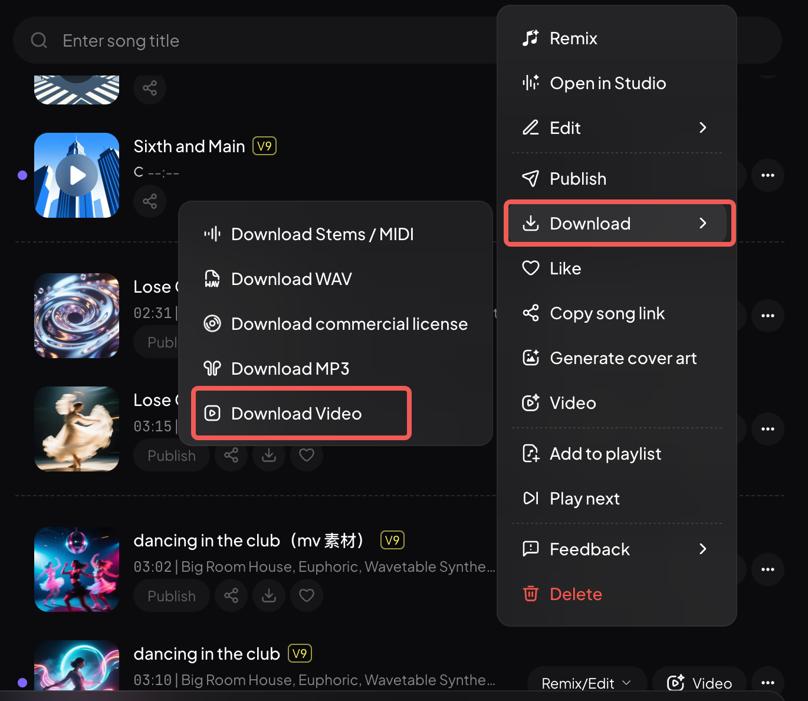

Mureka上手一周：AI做歌这件事，我终于信了
抱着试试看的心态装了Mureka，没想到三天里生成了二十多首歌。从风格描述到波形裁剪，这套东西到底是玩具还是生产力工具，聊点真实体验。
去年给公司年会做视频，背景音乐翻遍素材库找不到合心意的——要么版权卡得死，要么就是那种一听就是AI生成的廉价感。朋友甩给我一个官网链接，说"你试试Mureka"。说实话，我对AI做歌这类东西一直存疑，总觉得跟AI画图一样，乍一看惊艳，细看全是破绽。但年会片子等着交，死马当活马医吧。
初印象：没让我填一堆问卷
从官方下载拿到安装包很快，打开应用，没有弹窗问我"你的音乐风格偏好"这种废话。主界面就是一个对话框加几个功能区，Easy模式直接聊，Custom模式给你一堆参数自己调。我先聊了Easy模式——"帮我做一首适合深夜加班听的lo-fi"，十几秒后出来一段三十秒的片段。
说实话，第一遍听的时候我愣了一下。
不是那种"哇好牛"的震惊，是那种"这真的是AI做的？"的疑惑。鼓点稳，贝斯线有呼吸感，上面飘着一层电钢的分解和弦，甚至还有点黑胶底噪的质感。我把这段直接塞进视频里，同事以为我花了钱买的素材。
后来才知道那层底噪是风格描述里带的词起的作用。我当时随口说了句"chill一点"，模型自己加了vinyl crackle这类细节。这让我对这套东西的预期从"玩具"拉到了"值得认真研究"。
风格描述：两三个词比一堆词管用
Custom模式的Style区是我花时间最多的地方。一开始我犯了新手常犯的错误——把能想到的流派全堆上去：city pop、synthwave、drum & bass、民谣摇滚……结果生成出来的东西四不像，每种风格沾一点但每种都没站稳。
后来翻了Mureka文档才明白，风格描述要"少而准"。两三个核心词比七八个互相打架的标签靠谱。我改成"lo-fi hip-hop, chill, vinyl crackle"，出来的东西立刻就有那个味儿了。

还有个挺聪明的设计——风格词可以复用。写好一组满意的描述存下来，下次做同系列的东西直接调用。我现在存了三组配方：深夜加班用的lo-fi、开车通勤用的city pop、周末放松用的原声吉他配器。每次只需要改改歌词和调性，就能快速出一版。
裁剪工具：做短视频素材太顺手
生成完一首歌，我通常会先听一遍，找出最抓人的那段副歌。Trim工具在波形上拖两个点就搞定了——选起点、选终点、试听确认、应用。操作没什么技术含量，但解决了一个高频痛点：AI生成的歌经常在开头有两三秒的空白，或者结尾收得太拖沓，每次都要手动剪。

这个工具"只切不改"，它不会美化音质也不会改内容，就是纯粹的物理切割。剪完我直接下载音频文件丢进剪辑软件，省了打开Audacity再导一遍的麻烦。说实话，就这一个功能就值回我花的那点金币了——以前找一段15秒的卡点素材要翻十几首歌，现在直接从自己生成的里面挑，想要什么风格就做什么风格。
纯音乐模式：给店铺做BGM的神器
上周帮朋友的咖啡店做一套背景乐，要求是纯音乐、不能有人声、节奏平稳适合循环播放。换作以前我得去免版权音乐网站一首一首听，花大半天挑出十几首可能还不一定合适。
Mureka里有个Instrumental开关，打开后直接生成无人声的完整编曲。我在风格描述里写"钢琴主导、弦乐铺底、节奏平稳、适合循环"，连续生成了五首，挑了三首最合气氛的，朋友听了直接说"就用这个"。
还有个灵活的做法是从成品歌里派生伴奏——先做一首有人声的，再用分轨提取把人声和伴奏拆开，单独保留伴奏轨。这样同一首歌可以同时拿到人声版和伴奏版，做翻唱伴奏或者演出用带都方便。
发布社区：我暂时没玩透
作品库里的歌默认只有自己可见，想让别人听到就要点发布。发布后会进入一个可被发现的池子，其他人能在探索页听到、点赞、评论。但说实话我对这部分没太多兴趣——我用Mureka的目的很明确，就是给自己的视频和朋友的需求做素材，不是想当什么独立音乐人。
社区里倒是有个Remix功能挺有意思，别人可以基于你的作品做改编，你也可以改别人的。但这块我还没深入玩，等哪天有闲心了再说。
适合谁，不适合谁
适合的人：视频创作者、自媒体、小商家需要定制BGM的、想做音乐但没乐理基础的。如果你跟我一样，需要大量风格统一的短音频素材，这套东西能把你从素材库里解放出来。
不太适合的：想做专业级录音棚作品的、对音质有出版级要求的。AI生成的东西终究还是有它的上限，细节处理和情感表达跟真人演奏还是有差距。还有就是如果你对版权特别敏感，建议仔细看看平台的版权条款再用。
我用了一周，生成了大概二十多首歌，花的金币换算成人民币也就几十块。跟以前买素材库年卡或者找外包定制比起来，成本可以忽略不计。当然，踩坑也不少——风格词堆太多会四不像、生成出来的东西偶尔会跑调、有时候连续点生成结果都差不多。但这些问题在它能解决的场景面前，都是可以接受的小瑕疵。
总之，如果你的需求是"快速搞一段能用的音乐"，Mureka值得装来试试。如果你的需求是"做一张能上架流媒体的专辑"，那可能还得再等等，或者直接找真人音乐人。最后说一句，这套软件的完整资料在 GitHub、Gitee、GitCode 三个仓库都有，哪个顺手用哪个。